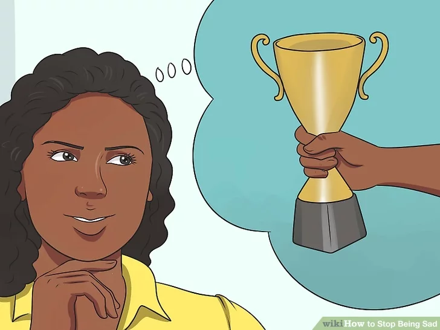
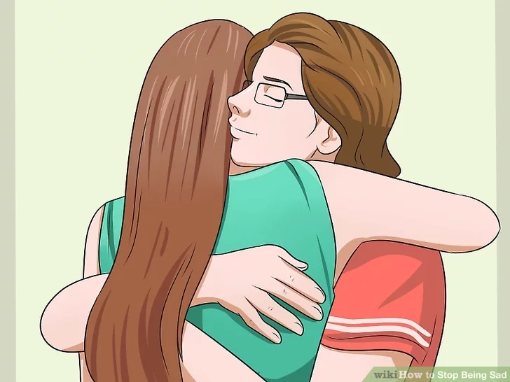
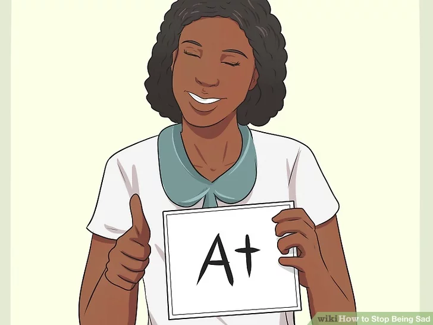
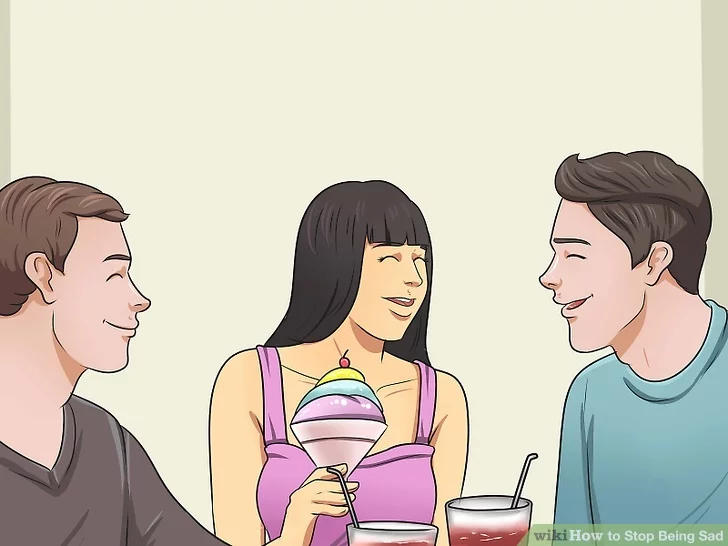

HEY!! Turn that frown upside down. Here's some ways to cheer you up.
Click here to listen to some uplifting music.

1. Learn how to stop ruminating.
Ruminating is when you repeatedly think about a negative thought. You might replay a conversation or think about a bad memory to the point of obsession. Ruminating causes more negative thoughts and emotions to arise, so the more you do it, the worse you'll feel.
Practice positive self-reflection. If you spend a lot of time thinking about your negative traits, interrupt your thoughts with self-praise. Tell yourself, "I did a great job on that project," or "I tried my best during that conversation."

2. Learn to forgive.
Holding grudges and thinking about yourself in a negative light can exacerbate feelings of sadness. Being able to forgive and let go may allow you to begin to feel happy.
3. Manage your stress level.
Organizing your day and allowing time to relax will help you relieve and avoid unnecessary stress.
Step back from any stressful situation if you can. If you cannot, try taking a deep breath and not reacting immediately to avoid having your feelings and tension rise unnecessarily.

4. Seek the positive in life.
Even in the worst situations, there is usually some positive aspect. It might take some time to recognize, but being able to see the positive may help you avoid negativity that encourages sadness.

5. Surround yourself with positive and happy people.
Supportive people can often put things in perspective and help you to feel less sad. Participate in activities with positive individuals or groups as often as you are able.